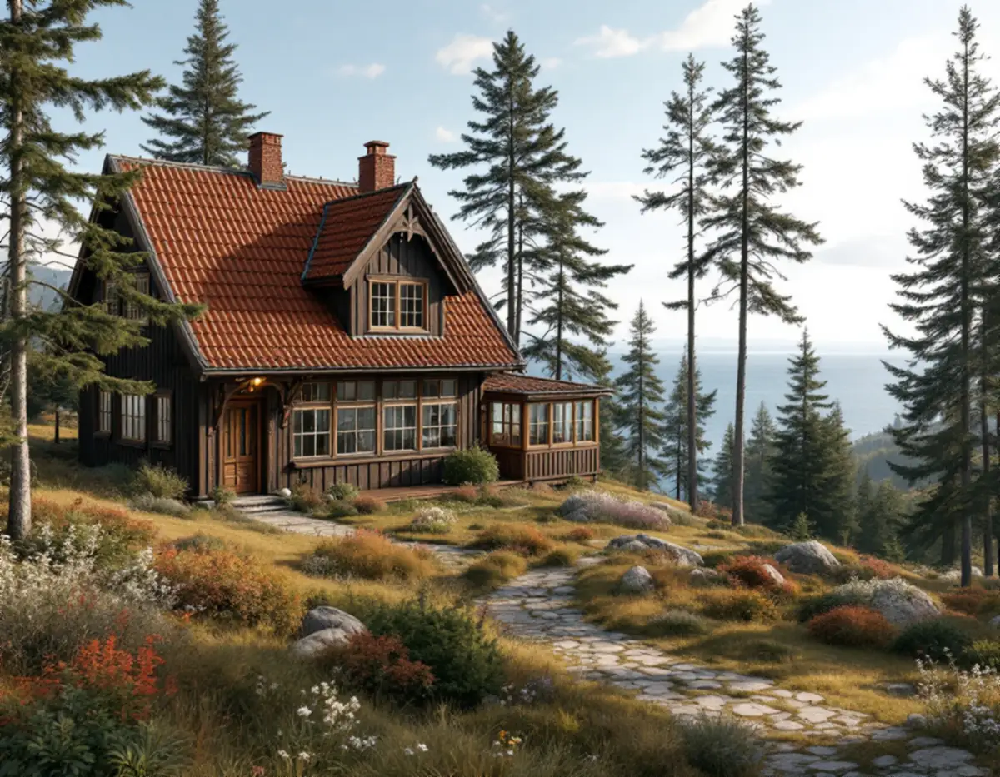
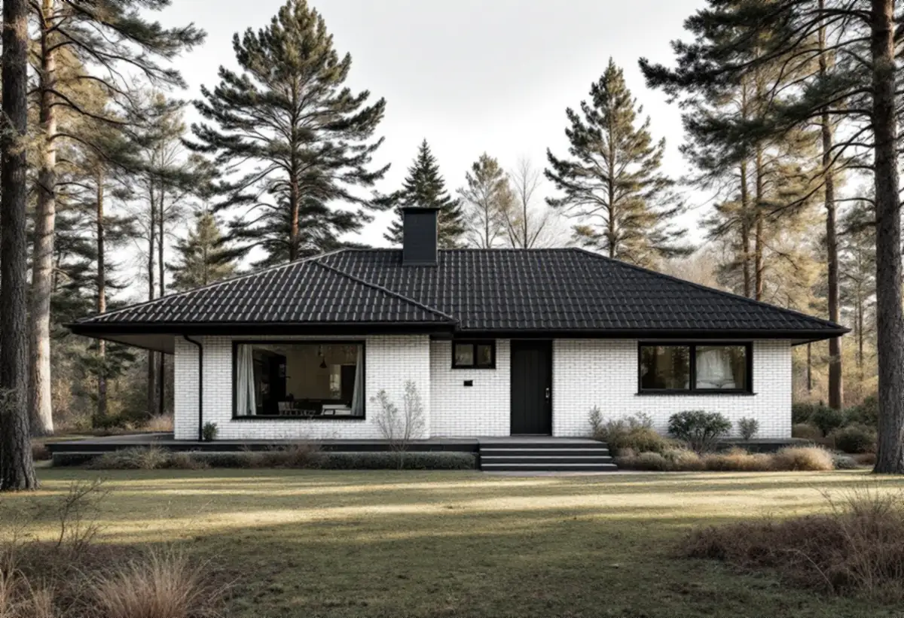

Sök fastigheten i webbkartan
Vi kontrollerar om huset ligger i ett blått område med utökad lovplikt eller har skyddsbestämmelser i detaljplanen.
På Lidingö är en takrenovering ofta en omläggning av ett äldre tegeltak: pannorna tas ner, underlaget görs nytt och samma tegel läggs tillbaka. Många villor ligger inom områden som staden pekat ut som särskilt kulturhistoriskt värdefulla, och där gäller utökad lovplikt – därför börjar vi med att kontrollera fastigheten i stadens webbkarta.

Lidingös villabebyggelse tog fart under 1900-talets första år. Enligt stadens kulturmiljöprogram var redan 293 villor byggda på Lidingö villastad i slutet av 1910, och även Brevik växte fram som villastad under samma period. Villastadens kärna består i dag av hus från ungefär 1905–1930, och under 1940- och 50-talen styckades många stora tomter och fick nya villor.
Efterkrigstiden gav andra hustyper. Mölna radhusby ritades av Nils Tesch redan 1954 men byggdes 1960–62, med fyrtio radhuslägenheter i sju längor. I Käppala byggdes villor under 1940- och 50-talen, utbyggnaden fortsatte på 1960-talet, ibland på gamla egnahems- eller sportstugetomter, och 1979 tillkom närmare hundra radhus och kedjehus kring Klarbärsvägen.
Gåshaga är däremot nytt: stadsdelen gick från industri, varv och fritidshus till ett bostadsområde med omkring 350 lägenheter mellan 1999 och 2009.

Kulturmiljöprogrammet beskriver taken ovanligt noga. De äldre jugendvillorna på Lidingö villastad har höga tak med rött lertegel, villorna från omkring 1910 har branta sadeltak, och 1920-talets klassicerande villor har sadeltak eller brutna tak med tegel. Villor från 1930- och 40-talen fick antingen sadeltak med lertegel eller flacka tak med papp.
I Brevik är bilden mer blandad. Där ligger tegel, skiffer eller plåt på de branta sadeltaken, och 1940–50-talsvillorna har tegel, papp eller skiffer. Skiffer och tegel kan oftast återanvändas, men spik, läkt och underlag behöver bytas.
Mölna radhusby har flacka sadeltak med ursprungligt enkupigt lertegel, och de mycket korta tak- och gavelsprången är avtäckta med koppar, liksom de murade skorstenarna. I Islingedalen ligger mattmörka betongpannor på villornas valmtak och flacka sadeltak. Varje område har alltså sitt eget material att utgå från.
Lidingö omges av Lilla Värtan, Halvkakssundet, Höggarnsfjärden, Askrikefjärden och Stora Värtan. Ön är kuperad med stora bergsryggar, och på sydöstra delen kring Gåshaga, Killinge och Käppala är skärgårdsterrängen tydlig. Hus på höjder och vid stränderna tar vind från fjärdarna, och där kontrollerar vi särskilt nock, vindskivor och plåtens infästning.
Branta tomter påverkar också själva arbetet. Mölna radhusby ligger på en kuperad högplatå, flera villor i Brevik står i souterräng och många tomter i villastäderna har stödmurar och terrasser. Ställning och materialhantering planeras därför vid ett besök på plats. Lummiga villaträdgårdar med gamla lövträd betyder dessutom löv i rännorna, se hängrännor och stuprör.
Sedan 1 december 2025 behövs inget bygglov för att byta taktäckningsmaterial eller kulör på ett en- eller tvåbostadshus, så länge huset inte är särskilt värdefullt, saknar skyddsbestämmelser i detaljplan eller områdesbestämmelser och planen inte har utökad lovplikt. Det framgår av Boverkets vägledning. Höjs taket kan det räknas som tillbyggnad, så stäm av med kommunen innan takets form eller höjd ändras.
Lidingö stad skriver på sidan om ändrade regler för byggande att utökad lovplikt gäller för de flesta byggnadsåtgärder inom särskilt kulturhistoriskt värdefulla områden, och att det i stadens webbkarta syns som ett blått lager. Är fastigheten gulmarkerad kan det finnas värden som behöver bedömas.
Stadens kulturmiljöprogram antogs av kommunfullmäktige den 16 december 2024. Det är ett kunskapsunderlag och inte juridiskt bindande, men det används vid bygglov. Radhusen på Canadastigen är byggnadsminne, och där är det Länsstyrelsen som prövar ändringar. Mer om reglerna finns på bygglov vid takbyte.
I Mölna radhusby är taket en del av helheten. Kulturmiljöprogrammet rekommenderar att de slammade tegelfasaderna, takbeläggningen av enkupigt lertegel och kopparplåtsdetaljerna bevaras. En renovering där innebär att teglet läggs tillbaka på nytt underlag och att kopparavtäckningarna vid takfot, gavlar och skorstenar lagas eller görs om i koppar.
Radhusen och kedjehusen från 1979 i västra Käppala är byggda samtidigt och har därför ofta samma ålder på underlag och plåt. Det gör det praktiskt att renovera flera hus efter varandra, så att anslutningarna mellan husen blir lika.
På en villa på Lidingö villastad eller Brevik tar vi ner teglet eller skiffern och sorterar det. Därefter byts underlagspapp och läkt, och råspont som tagit skada vid takfot, skorsten eller kupor ersätts. Pannorna läggs tillbaka, och där det saknas kompletterar vi med likvärdigt material så att takets yta och kulör behålls.
Plåten är lika viktig. Fotplåt, ränndalar, vindskivor och skorstensbeslag görs om, och där huset har kopparplåt fortsätter vi i koppar. På hus med flacka papptak från 1930–50-talen byts tätskiktet och avvattningen ses över, se plattak.
Vi kontrollerar också vindens ventilation och att takfoten släpper in luft, så att det inte bildas fukt under det nya underlaget. Läs mer om vindsisolering, om oss som takläggare på Lidingö och om takrenovering i allmänhet.
Vi kontrollerar om huset ligger i ett blått område med utökad lovplikt eller har skyddsbestämmelser i detaljplanen.
Kulturmiljöprogrammets text om ditt område visar vilka tak och detaljer som räknas som karaktärsdrag.
Vi bedömer vad som kan återanvändas och var underlaget är skadat. Se takbesiktning.
Ställning, container och leveranser anpassas till kuperade tomter och smala villagator.
Pannor och skiffer läggs tillbaka på nytt underlag och kompletteras med likvärdigt material.
Plåtdetaljer görs om i samma metall, rännor och stuprör monteras och du får en genomgång av arbetet.
Rotavdraget är 30 procent av arbetskostnaden, högst 50 000 kronor per person och år och högst 75 000 kronor ihop med rutavdrag. Material och resor ger inget avdrag. Vi drar av beloppet direkt på fakturan, och två ägare kan dela på avdraget.
En omläggning där teglet återanvänds består till stor del av arbete, eftersom material bara köps in för underlag, läkt, plåt och kompletterande pannor. Läs mer om rotavdrag för takarbete.
På Lidingö påverkas kostnaden mest av takets form och läge: branta tak med frontespiser och kupor, hus i souterräng och tomter där ställningen måste stå i slänt tar mer tid. Om tegel eller skiffer kan återanvändas och om plåtdetaljerna ska vara i koppar spelar också in. Läs mer i vad kostar en takrenovering och testa kalkylatorn.
Takbyte, besiktning och plåtarbeten.
Takläggare på Lidingö →Så fungerar en omläggning.
Takrenovering och takomläggning →Det här styr priset.
Vad kostar en takrenovering? →Räkna på takytan och ROT.
Takbyte-kalkylator →Djursholm, Stocksund och Enebyberg.
Takrenovering i Danderyd →Saltsjöbaden, Boo och Älta.
Takrenovering i Nacka →Näsbypark, Viggbyholm och Gribbylund.
Takrenovering i Täby →